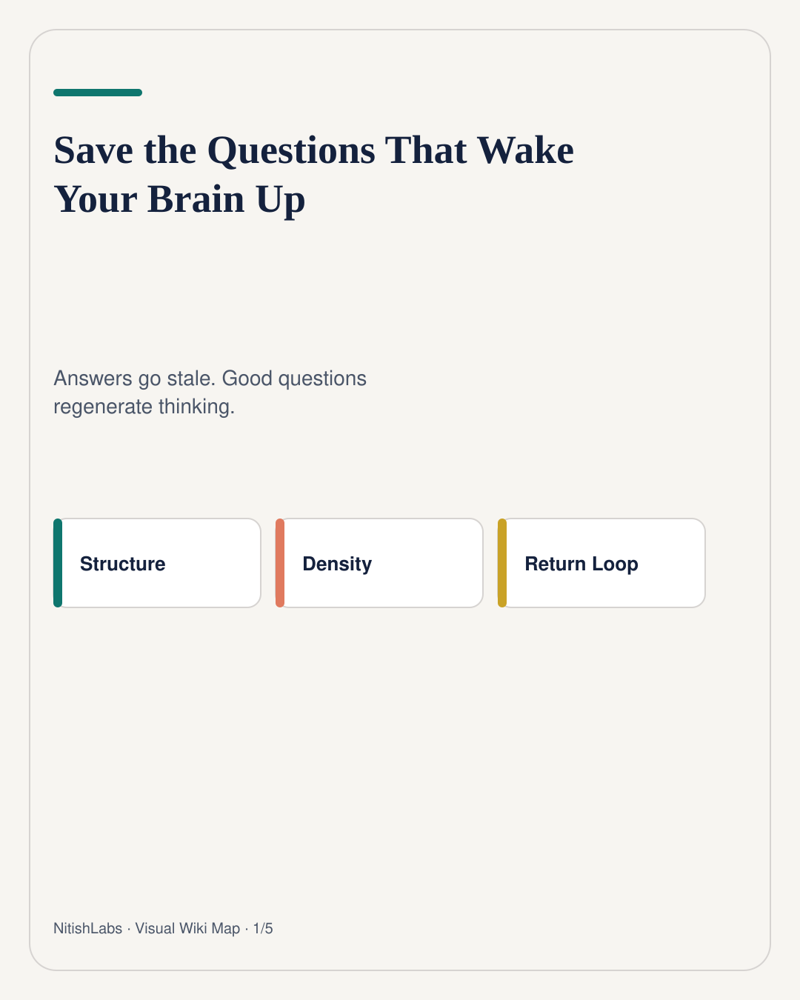
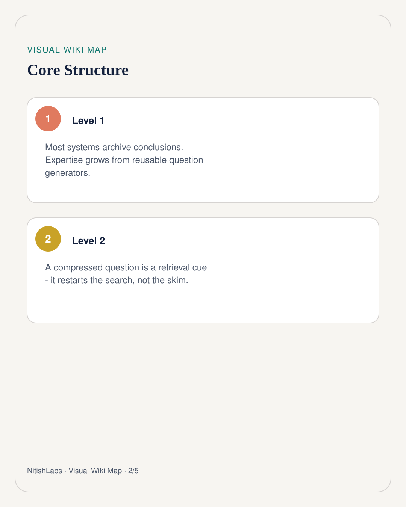
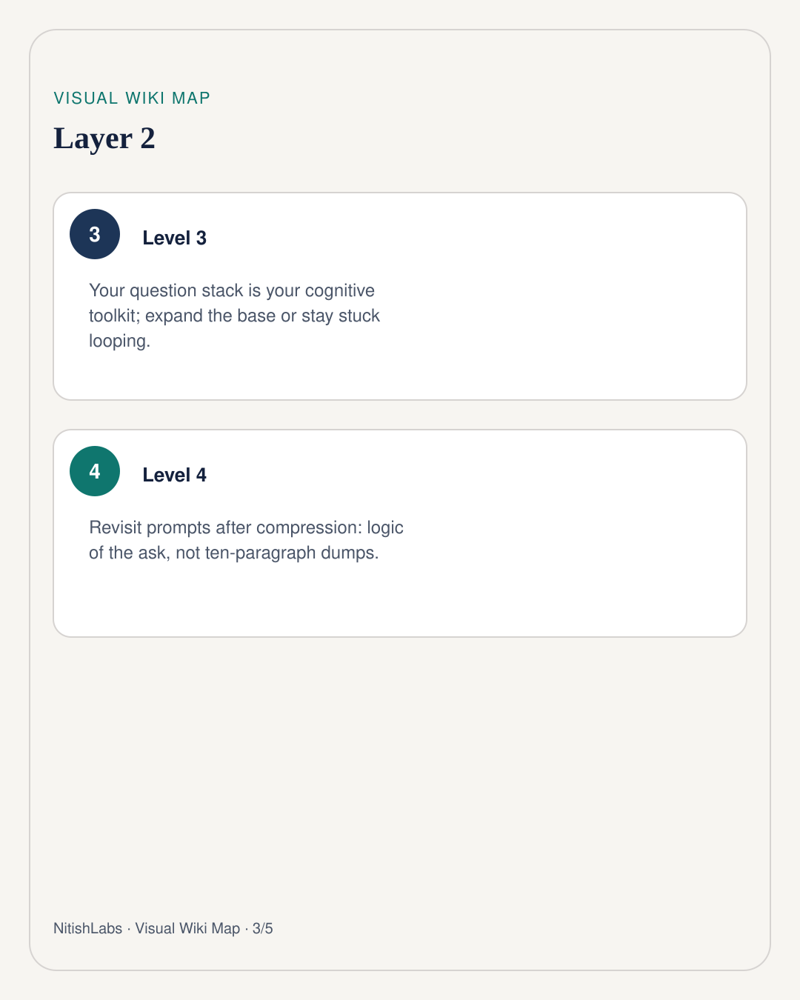
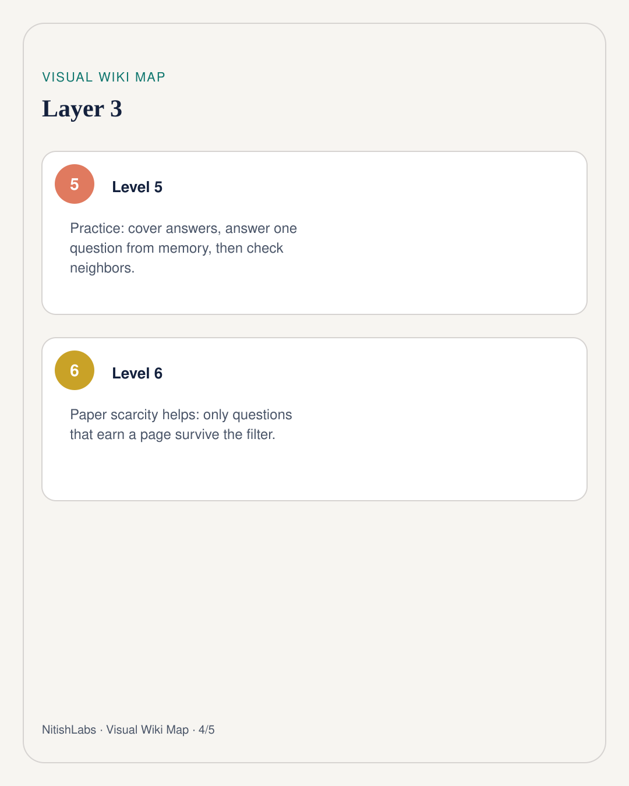
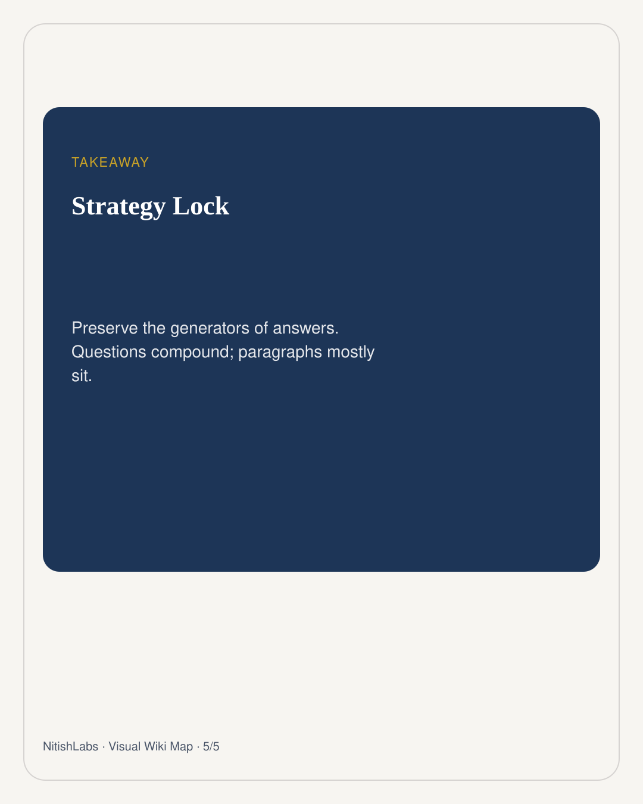

Save the Questions That Wake Your Brain Up
Most knowledge systems hoard answers. The higher-leverage move is to keep the questions that restart searching - your living toolkit, not your graveyard of conclusions.
Visual Wiki Map
Compressed schema carousel · swipe





Tell someone everything you know about a topic and the room goes quiet. Ask why smart people build systems they cannot trust, and the mind wakes up. Nitish Chauhan noticed the same pattern in himself: live questions generate energy; archived paragraphs often do not.
That is not anti-answer. It is anti-passive archive. Questions are retrieval cues. They reopen conflict between problem and solution. They regenerate the flow even when the wording is gone.
Your toolkit is a question stack
The questions you ask come from schemas you already trust. If those schemas never grow, you keep excavating with the same tools. Progress still happens - but compounding stalls.
Expand the base that can create new questions, or stay looping inside a familiar apparatus.
Live sessions mint tools in real time. If you never sit back and stabilize them, every brilliant hour leaks. Compress the ask - the logical spine of the prompt - not the ten-paragraph dump that will make future-you want to throw the notebook.
How to practice without becoming a tourist
- End of day: extract 3-7 compressed questions from the session.
- Next revisit: cover the answers. Answer from memory for two minutes each.
- Ask what assumption generated the question - that upgrades the schema.
- Promote winners to paper or wall space. Digital infinity gives everything equal status; scarcity creates hierarchy.
Why paper still wins a filter fight
Infinite notes flatten attention. A page that had to earn ink becomes a signal. NitishLabs treats that as design, not nostalgia: constraints promote what compounds.
Archive answers → skim tomorrow Save live questions → restart the search Retrieve under cover → rebuild the network
If three days later you do not recognize your own questions, that is not failure - it is proof your activated state outran your baseline. Raise the floor by revisiting the generators, not by mourning forgotten paragraphs.